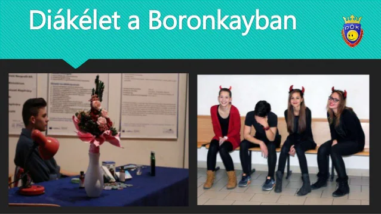

Középiskolánkban országosan is elismert színvonalon folyik az érettségi és technikusi vizsgára, felsőoktatási felvételire, tanulmányi versenyekre, valamint a nyelvvizsgára való felkészítés.
Oktató-nevelő munkánk fontos eleme a szabadidő hasznos eltöltése, ezért diákjaink számtalan délutáni, hétvégi és táborozási program közül választhatnak:
sport: labdarúgás, atlétika, kosárlabda, asztalitenisz, mini-tenisz, kerékpár, röplabda, sakk, testépítés, gyalog- és kerékpártúrák, sí- és vízi tábor minden évben,
kulturális: fotó, újságíró, színjátszó, énekkar, filmklub, rajz, orgona, zongora, gitár ez utóbbi kettőből kezdő és haladó szinten,
nyelvi- és tantárgyi szakkörök: minden, iskolánkban oktatott tantárgyból és szakterületről.
Intenzív diákéletünk megmutatkozik az egyéb programokban is: gólyatábor, szecskaavató, drámanap, Mikulás-járás, adventi kiállítás, ének-zenei nap, szalagavató, Szent György-hét, diáknap, nyelvi táborok (főleg angol és német nyelvterületekre).
